Nos services
Massage suédois : Le massage suédois est l'un des types de massage les plus populaires. Il utilise des mouvements de pétrissage, d'effleurage, de friction et de tapotement pour détendre les muscles, améliorer la circulation sanguine et favoriser la relaxation globale du corps.
Massage aux pierres chaudes : Ce massage utilise des pierres lisses et chauffées, placées sur certaines parties du corps, combinées à des techniques de massage traditionnelles. Les pierres chaudes aident à détendre les muscles tendus, à améliorer la circulation sanguine et à favoriser une relaxation profonde.
Massage des tissus profonds : Ce type de massage cible les couches profondes des muscles et des tissus conjonctifs. Les thérapeutes utilisent des techniques plus intenses pour relâcher les tensions chroniques, les adhérences musculaires et améliorer la mobilité.
Massage thaïlandais : Le massage thaïlandais est une technique qui combine des étirements, des pressions et des mouvements rythmiques pour stimuler l'énergie du corps. Le thérapeute guide le client à travers différentes positions corporelles pour favoriser la flexibilité, la relaxation et l'équilibre énergétique.
Massage aux huiles essentielles : Ce massage intègre l'utilisation d'huiles essentielles aromatiques pour améliorer les bienfaits du massage. Les huiles essentielles sont sélectionnées en fonction des besoins spécifiques du client, offrant une expérience sensorielle apaisante et revitalisante.
Massage sportif : Le massage sportif est spécifiquement conçu pour les sportifs et les athlètes. Il peut inclure des techniques de massage suédois, des étirements, des frictions et des manipulations articulaires pour soulager les tensions musculaires, prévenir les blessures et améliorer la performance sportive.
Massage pré-natal : Ce type de massage est destiné aux femmes enceintes. Il est adapté pour répondre aux besoins spécifiques du corps en transformation pendant la grossesse, en soulageant les douleurs lombaires, les tensions musculaires et en favorisant la relaxation.
Massage aux bougies : Ce massage utilise des bougies de massage spéciales, composées de cires végétales et d'huiles essentielles. Les bougies sont allumées et la cire fondue est utilisée pour masser le corps, offrant une expérience relaxante et nourrissante pour la peau.
Massage aux bambous : Ce massage utilise des bâtons de bambou pour appliquer des pressions et des mouvements spécifiques sur le corps. Les bâtons de bambou aident à relâcher les tensions musculaires, à stimuler la circulation et à promouvoir une sensation de bien-être.
Bains : Certains salons de massage proposent des bains relaxants, tels que des bains à remous, des bains à jets ou des bains aux huiles essentielles. Ces bains peuvent aider à détendre les muscles, à apaiser l'esprit et à favoriser une relaxation profonde.
Saunas : Les salons de massage de luxe peuvent également offrir un accès à un sauna, une pièce chauffée qui favorise la transpiration et la détoxification du corps. Les séances de sauna peuvent aider à éliminer les toxines, à améliorer la circulation sanguine et à détendre les muscles.
Hammam : Le hammam, également connu sous le nom de bain turc, est un bain de vapeur qui offre une expérience de purification et de détente. Il implique l'utilisation de vapeur chaude et d'exfoliation pour nettoyer la peau, ouvrir les pores et stimuler la circulation.
Soins du corps : Certains salons de massage proposent des soins du corps complémentaires, tels que des enveloppements corporels, des gommages, des soins hydratants ou des soins amincissants. Ces traitements peuvent revitaliser la peau, laisser une sensation de douceur et améliorer l'apparence générale de la peau.
Réflexologie : La réflexologie est une technique qui se concentre sur la stimulation des points réflexes des pieds, des mains ou des oreilles pour favoriser la guérison, l'équilibre énergétique et la relaxation.
Soins du visage : Certains salons de massage offrent des soins du visage pour rafraîchir, hydrater et revitaliser la peau du visage. Ces soins peuvent inclure le nettoyage, l'exfoliation, l'application de masques, les massages du visage et l'hydratation. 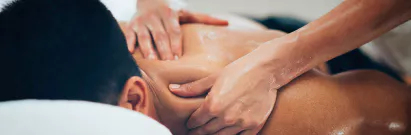 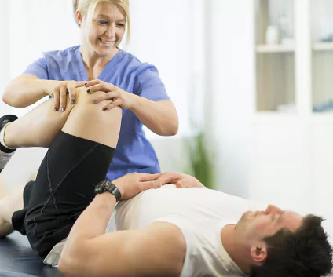 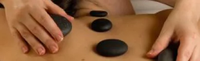 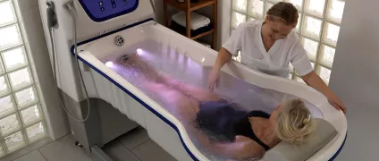 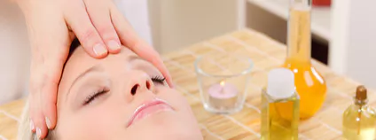 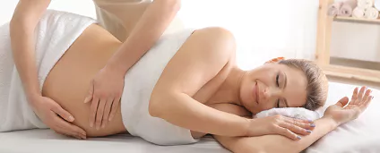 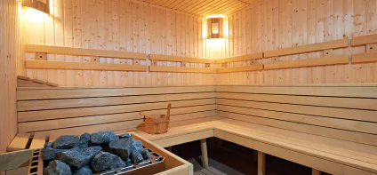 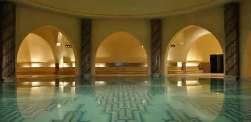 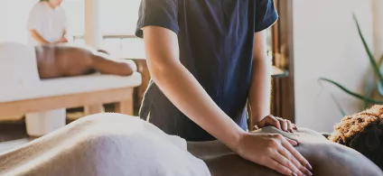 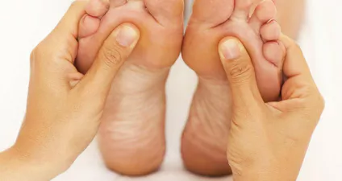 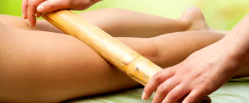 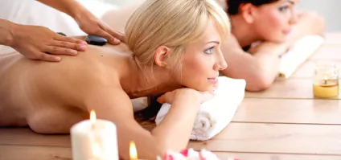 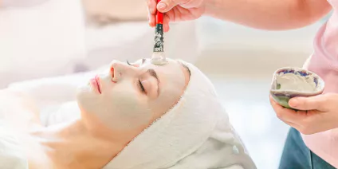 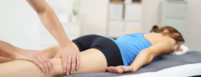 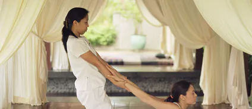